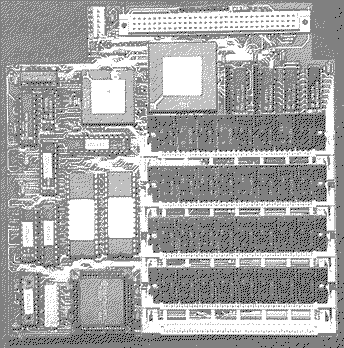

Previous
Next
TOC
CPU Takt 16MHz (MC68020 CPU)
Cachegröße 32 Kilobyte
16Mhz kommen vom Videochip (Pin 39 oder Pin 5 der MCU)
MC68881 FPU kann nachgerüstet werden
Soundchip (Pin 14) schaltet den Cache ein oder aus (Drahtverbindung)
oder über einen prellfreien Schalter
Eventuell probleme mit dem DMA-Chip (mitgelieferten zwischensockel
verwenden)
Das SST Board von Gadgets by Small

CPU Takt 33MHz oder 50MHz (MC68030 CPU)
MC68882 FPU kann auch separat getaktet werden (Sockel vorhanden für
einen entsprechenden Quarz)
Maximal 8 Megabyte Fastram (2 oder 3 Waitstates) in 30 Pin SIMMs mit
eigener MMU (Autoordnerprogramm für die MMU wird mitgeliefert)
Englisches TOS 2.06 in angepasster Form wird mitgeliefert
Blitterchip muß zwingend ausgebaut werden
weiterblättern
Kapitel Die Beschleunigerboards, Seite 7